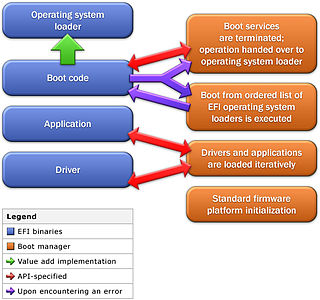
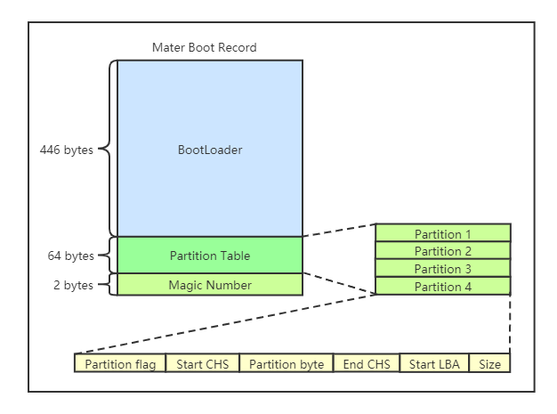
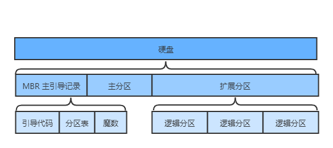
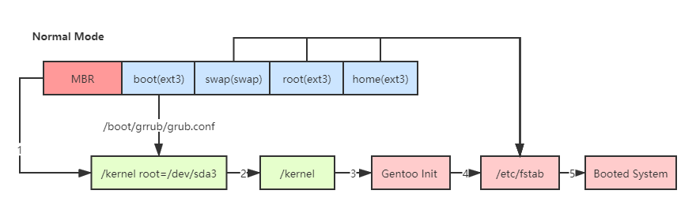
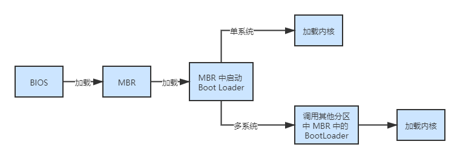
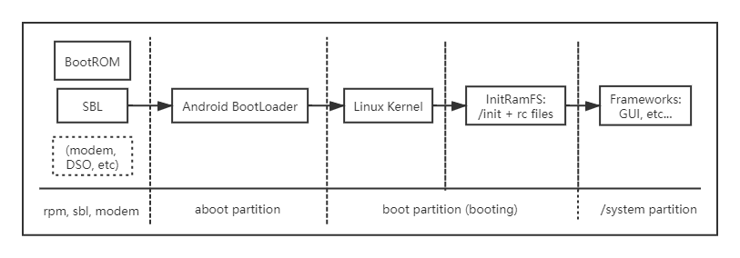

计算机启动原理
启动流程概述
- 开机加电；
- CPU 跳转到 BIOS 指令的的物理地址（在 Intel 平台为 0XFFFF0）；
- BIOS 执行 POST（Power-On Self Test，硬件自检）；
- 找到可启动的设备；
- 从 MBR 加载引导扇区；
- BIOS 将控制权移交给操作系统的 Boot Loader（引导加载程序）。
BIOS
BIOS（Basic Input/Output System）是基本输入输出系统，它为电脑提供最低级、最直接的硬件控制与支持，是联系底层的硬件系统和软件系统的桥梁。为了在关机后使 BIOS 不会丢失，早期的 BIOS 存储在 ROM（Read-Only Memory）中，并且其大小不会超过 64KB；目前的 BIOS 大多有 1MB 到 2MB，所以会被存储在 闪存（Flash Memory）中。
BIOS 是一组固化到计算机主板上一个 ROM 芯片中的程序，它保存着计算机最重要的基本输入输出的程序、开机后自检程序和系统自启动程序，它可从 CMOS（一种 RAM 芯片）中读写系统设置的具体信息。
BIOS 通常与硬件系统集成在一起（在计算机主板的 ROM 或 EEPROM 中），所以也被称为固件。
BIOS 执行流程
BIOS 存放在 ROM 中，所以断电后不会丢失。电脑开机时，CPU 加电后会跳转到 BIOS 的第一条指令的物理地址 0xFFFF0 上，BIOS 开始执行。
- 第一次启动检查计算机硬件和外围设备（第二次自检由内核完成），例如 CPU、内存、风扇灯。当 BIOS 启动，就会做一个自我检测的工作，自检过程被称为 POST（Power On Self Test）；
- 如果自检没有问题，BIOS 开始对硬件进行初始化，并规定当前可启动设备的先后顺序，选择由哪个设备来开机。
选择好开机设备后，就会从该设备的 MBR（主引导目录）中读取 Boot Loader（启动引导程序）并执行。启动引导程序用于引导操作系统启动（例如 GRUB）。
当 MBR 被加载到 RAM 之后，BIOS 就会将控制权交给 MBR，进入系统引导的第二阶段。
- 硬件自检（Power-On Self Test，POST）
如果硬件出现问题，主板会发出蜂鸣，终止启动；否则检查没有问题，则 BIOS 调用 GPU 在屏幕上显示出 CPU、内存、硬盘等相关信息。BIOS 在执行完硬件自检和初始化后，将自己复制到从 0xA0000 开始的物理内存中继续执行。
UEFI 与 BIOS
BIOS 存在一些问题：
- 开发效率低：BIOS 使用汇编语言开发，开发效率较低，代码与硬件密切相关，耦合性高，难以移植；
- 性能较低：BIOS 基本输出/输出服务需要通过中断完成，导致开销，且 BIOS 没有提供异步工作模式，将在等待时消耗时间；
- 功能扩展性差：BIOS 代码采用静态链接，需要增加硬件功能时，必须将 16 位代码放置在 0x0C0000~0x0DFFFF 地址，初始化时将其设置为约定的中断处理程序。而且 BIOS 没有提供动态加载设备驱动的方案；
- 安全性：BIOS 运行过程没有考虑任何安全性；
- 不支持从硬盘 2T 容量以上的地址引导，受限于 BIOS 的寻址方式，BIOS 硬盘采用 32 位地址，那么引导扇区的最大逻辑地址是 2^32，约为
2^32 * 512 = 2T。
为了解决 BIOS 的问题，UEFI 产生了。
UEFI（Unified Extensible Firmware Interface）是统一可扩展固件接口，它是一种个人电脑规格，用来定义操作系统与系统固件之间的软件接口，作为 BIOS 的替代方案，UEFI 负责加电自检（POST），联系操作系统以及提供连接操作系统与硬件的接口。
EFI 引导管理员与 EFI drivers 的沟通方式（图片来自维基百科）：

UEFI 优于 BIOS 的几个特点：
- EFI 是使用模块化、C 语言风格的参数堆栈传递方式以及动态链接的形式构建的系统，相对于 BIOS 而言更容易实现，同时具有更强的容错性，降低开发时间；
- 运行于 32 位或 64 位模式，面对未来的增强处理器模式下，能够突破 BIOS 16 位代码的寻址能力，达到处理器最大寻址；
- UEFI 具有良好的鼠标操控图形和界面，开机速度也优于 BIOS。
BIOS 启动过程：
1 | [ Power-On ] -> [ BIOS Initializtion ] -> [ POST ] -> [ Load OS ] -> [ Enter OS ] |
UEFI 过程：
1 | [ Power-On ] -> [ UEFI Initializtion ] -> [ Load OS ] -> [ Enter OS ] |
MBR
MBR（Master Boot Record）是主引导记录或者开机记录，是一个 512 byte 的扇区，位于磁盘的固定位置。
MBR 存在于硬盘驱动器最开始部分的一个特殊扇区，这个扇区包含已安装的操作系统启动记录器和驱动器的逻辑分区信息。BIOS 完成 POST 和初始化后，会根据 CMOS 中设定的启动顺序选择引导的设备，设备可以是 U 盘或硬盘。如果为硬盘，则 BIOS 就会读取 MBR，MBR 中包含了一段引导程序，一个分区表和 Magic Number。
MBR 结构图：

标准 MBR 结构描述：
| 地址 | 描述 | 长度（字节） |
|---|---|---|
| 0000 | 代码区 | 440（最大 460） |
| 01B8 | 磁盘标志 | 4 |
| 01BC | 一般为空值；0x0000 | 2 |
| 01BE | 标准 MBR 分区表规划（4 个主分区表入口） | 64 |
| 01FE | MBR 有效标志（Magic Number）：0x55FA | 2 |
MBR，总大小：446 + 64 + 2 = 512 byte
分区表的长度为 64 byte，共有 4 项，每个 16 byte，那么一个硬盘只能分为 4 个一级分区。
每个分区表项结构描述如下：
| 偏移 | 长度（字节） | 描述 |
|---|---|---|
| 00H | 1 | 分区状态：00 非活动分区；80 活动分区；其他无意义 |
| 01H | 1 | 分区起始磁头号（HEAD），用到全部 8 位 |
| 02H | 2 | 分区起始扇区号（SECTOR），占据 02H 的 0－5 位；该分区的起始磁柱号（CYLINDER），占据 02H 的 6－7 位和 03H 的全部 8 位 |
| 04H | 1 | 文件系统标志位 |
| 05H | 1 | 分区结束磁头号（HEAD），用到全部8位 |
| 06H | 2 | 分区结束扇区号（SECTOR），占据 06H 的 0－5 位；该分区的结束磁柱号（CYLINDER），占据 06H 的 6－7 位和 07H 的全部 8 位 |
| 08H | 4 | 分区起始相对扇区号 |
| 0CH | 4 | 分区总的扇区数 |
在分出主分区后，其他部分可分为扩展分区，或者不分，扩展分区必须再分成若干逻辑分区后才能使用，所有的逻辑分区都是扩展分区。
硬盘基本结构：

1 | 硬盘的容量 ＝ 主分区的容量 ＋ 扩展分区的容量 |
1 | 扩展分区的容量 ＝ 各个逻辑分区的容量之和 |
GPT
GPT（GUID Partition Table）是全局唯一标识分区表，它是一个实体硬盘的分区表的结构布局的标准。它是 UEFI（可扩展固件接口）标准的一部分，被用于替代 BIOS 系统中的存储逻辑块地址和大小信息的主引导记录（MBR）分区表。对于那些扇区为512 byte 的磁盘，MBR 分区表不支持容量大于 2.2TB（2.2×1012 byte）的分区。
BootLoader
下图为 Linux 系统普通模式下的启动过程：

Boot Loader（启动引导加载程序）又叫做操作系统内核加载器（OS Kernel Loader），一个在操作系统内核运行前运行的一段小程序，通过这段小程序可以初始化硬件设备，建立内存空间的映射，将系统软硬件环境带到一个合适的状态，以便为最终调用操作系统内核准备好正确的环境。通常，Boot Loader 是严重地依赖于硬件而实现的，特别是在嵌入式世界。因此，在嵌入式世界里建立一个通用的 Boot Loader 几乎是不可能的。
启动引导程序拥有以下功能：
- 加载操作系统的内核。这是启动引导程序最主要的功能；
- 拥有一个可以让用户选择的菜单，来选择到底启动哪个系统。如果安装过双 Windows 系统，就可以看到类似的选择菜单，不过这个选择菜单是由 Windows 的启动引导程序提供的，不是 GRUB；
- 可以调用其他的启动引导程序，这是多系统启动的关键。需要注意的是，Windows 的启动引导程序不能调用 Linux 的启动引导程序，所以一般建议先安装 Windows，后安装 Linux，是为了将 Linux 的启动引导程序安装到 MBR 中，覆盖 Windows 的启动引导程序。
Lniux 下的 Boot Loader 程序常见有两种：LILO 和 GNU GRUB。
LILO 没有命令交互界面，不支持网络引导，MBR 配置错误将导致系统无法引导；
GRUB 具有命令交互界面，支持网络引导，如果 MBR 配置出现错误，则默认跳转到 GRUB 命令行界面。
早期的 LILO 引导程序已经不常见了，GRUB 拥有更多优势：
- 支持更多的文件系统;
- GRUB 的主程序可以直接在文件系统中查找内核文件；
- 在系统启动时，可以利用 GRUB 的交互界面编辑和修改启动选项；
- 可以动态修改 GRUB 的配置文件，这样在修改配置文件之后不需要重新安装 GRUB，而只需重新启动就可以生效。
GRUB 引导内核的过程
按照启动流程，BIOS 在完成自检后，会到第一个启动设备的 MBR 中读取 GRUB。在 MBR 中用来放置启动引导程序的空间只有 446 Byte，不足以容纳 GRUB 主程序代码，那么 Linux 将 GRUB 的程序分为三段执行：
- Stage 1：执行 GRUB 主程序
第一阶段用来执行 GRUB 主程序，主程序必须放在启动区中（MBR 或者引导扇区中）。但是 MBR 容量有限，所以只能安装 GRUB 的最小的主程序，而不能安装 GRUB 的相关配置文件。这个主程序用来启动 Stage 1.5 和 Stage 2。
- Stage 1.5：识别不同的文件系统
Stage 2 比较大，只能放在文件系统中（分区），但是 Stage 1 不能识别不同的文件系统，所以不能直接加载 Stage 2。这时需要先加载
Stage 1.5，由 Stage 1.5 来加载不同文件系统中的 Stage 2。
Stage 1.5 没有放在文件系统中，而是在安装 GRUB 时，直接安装到紧跟 MBR 之后的 32KB 的空间中，这段硬盘空间是空白无用的，而且是没有文件系统的，所以 Stage 1 才能直接读取 Stage 1.5。读取了 Stage 1.5 后就能识别不同的文件系统，才能加载 Stage 2。
- Stage 2：加载 GRUB 的配置文件
加载 GRUB 的配置文件 /boot/grub/grub.conf，根据配置文件中的定义，加载内核和虚拟文件系统。接下来内核就可以接管启动过程，继续自检与加载硬件模块了。
Linux Kernel 加载
- 根据 GRUB 设定的内核映像所在路径，系统读取内存映像，并进行解压缩内核；
- 系统将内核解解压至内存中，调用初始化函数初始化各种设备，完成 Linux 核心环境的建立。
启动流程图

CentOS 6.x 系统启动过程
- 电脑加电，加载 BIOS 信息，BIOS 进行系统检测。依照 BIOS 设定，找到第一个可以启动的设备（一般是硬盘）；
- 读取第一个启动设备的 MBR (主引导记录），加载 MBR 中的 Boot Loader（启动引导程序，常见为 GRUB）；
- 依据 Boot Loader 的设置加载内核，内核会再进行一遍系统检测。系统一般会采用内核检测硬件的信息，而不一定采用 BIOS 的自检信息。内核在检测硬件的同时，还会通过加载动态模块的形式加载硬件的驱动；
- 内核启动系统的第一个进程，也就是 /sbin/init；
- 由 /sbin/init 进程调用 /etc/init/rcS.conf 配置文件，通过这个配置文件调用 /etc/rc.d/rc.sysinit 配置文件。而 /etc/rc.d/rc.sysinit 配置文件是用来进行系统初始化的，主要用于配置计算机的初始环境；
- 还是通过 /etc/init/rcS.conf 配置文件调用 /etc/inittab 配置文件。通过 /etc/inittab 配置文件来确定系统的默认运行级别；
- 确定默认运行级别后，调用 /etc/init/rc.conf 配置文件；
- 通过 /etc/init/rc.conf 配置文件调用并执行 /etc/rc.d/rc 脚本，并传入运行级别参数；
- /etc/rc.d/rc 确定传入的运行级别，然后运行相应的运行级别目录 /etc/rc[0-6].d/ 中的脚本；
- /etc/rc[0-6].d/ 目录中的脚本依据设定好的优先级依次启动和关闭；
- 最后执行 /etc/rc.d/rc.local 中的程序；
- 如果是字符界面启动，就可以看到登录界面了。如果是图形界面启动，就会调用相应的 X Window 接口；
其他
Android 设备启动过程
Android 设备与 PC 的硬件差异较大，虽然启动过程不相同，但是过程类似。
Android 设备通用启动流程图：
